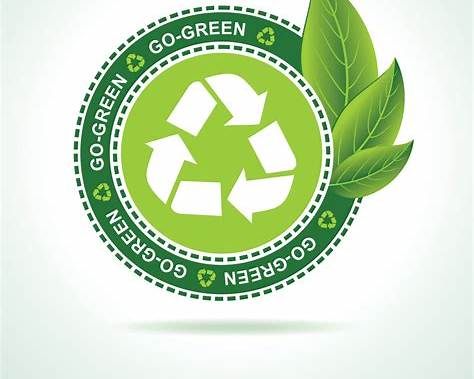

Projetos de energia solar e eólica têm crescido rapidamente, reduzindo a dependência de combustíveis fósseis e diminuindo a emissão de gases de efeito estufa. Países como Alemanha e Brasil estão entre os maiores produtores.
Iniciativas que transformam o planeta
Projetos de energia solar e eólica têm crescido rapidamente, reduzindo a dependência de combustíveis fósseis e diminuindo a emissão de gases de efeito estufa. Países como Alemanha e Brasil estão entre os maiores produtores.

Programas de reciclagem e reaproveitamento de resíduos estão sendo implementados em várias cidades do mundo. A economia circular incentiva a reutilização contínua de materiais, reduzindo o impacto ambiental.

Organizações e governos promovem políticas de proteção de biomas, reflorestamento e combate ao desmatamento, essenciais para manter a biodiversidade e o equilíbrio climático.